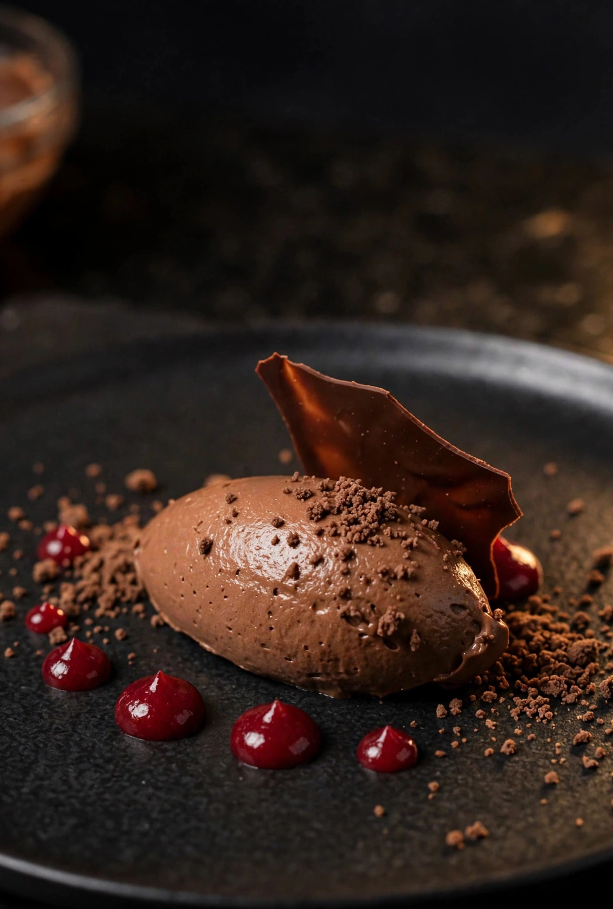
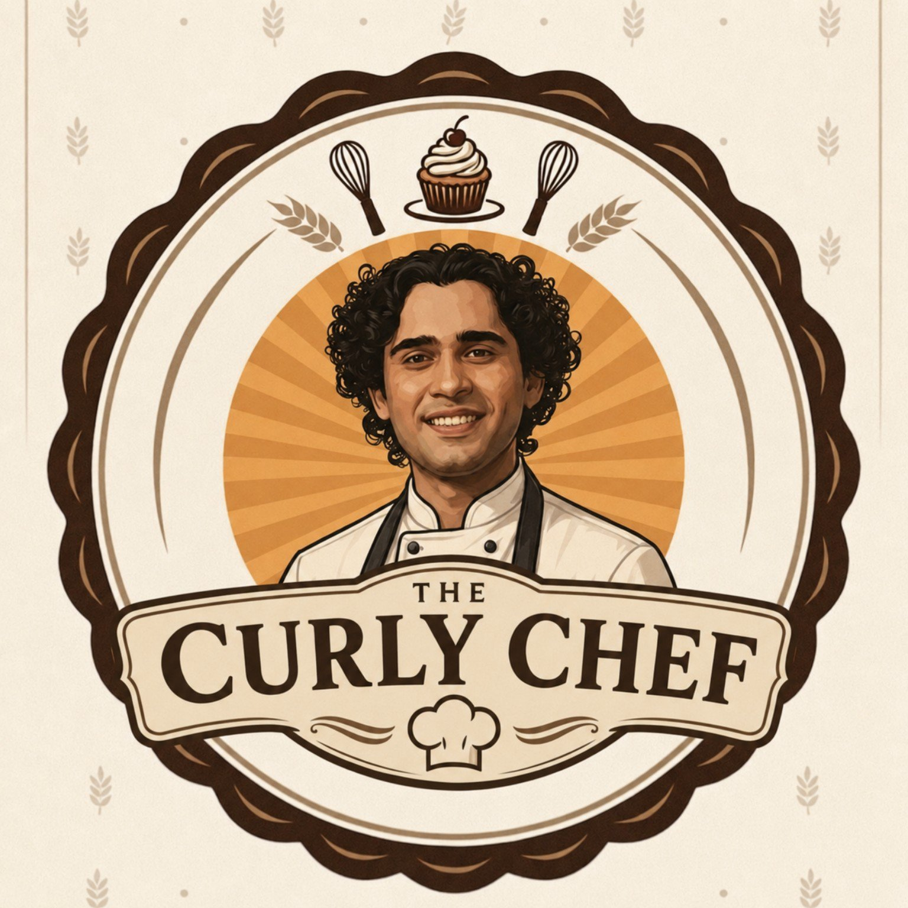

Latest recipe
Eggless Gelatin-Free Gourmet Chocolate Mousse
Dark chocolate, set without eggs or gelatin — plated with chocolate crumble and berry gel.

The Curly ChefRecipes
New recipes land here first — read them right on this page, or take the printable PDF.

Latest recipe
Dark chocolate, set without eggs or gelatin — plated with chocolate crumble and berry gel.
Eggless · Gelatin-free
French-inspired · silky · airy · intensely chocolatey
| Dark couverture | 200 g, 66–70%, finely chopped |
| Full-fat milk | 100 g |
| Glucose syrup | 20 g |
| Vanilla bean paste | 2 g |
| Espresso powder | 1 g |
| Fine sea salt | 1 g |
| Heavy / whipping cream | 300 g, 35%+ fat, very cold |
Prepare the chocolate. Place finely chopped couverture in a dry heatproof bowl. The smaller and more uniform the pieces, the more evenly the ganache will emulsify.
Heat the dairy. Combine milk, glucose, vanilla, espresso powder and salt in a saucepan. Heat gently to about 75–80°C. Do not boil aggressively.
Build the ganache. Pour about one-third of the hot dairy over the chocolate. Rest 30 seconds. Stir from the centre outward with a spatula until a glossy elastic emulsion forms. Add the remaining hot dairy in two additions, fully emulsifying after each addition.
Finish the emulsion. Blend with an immersion blender for about 30–45 seconds with the blade fully submerged. Keep the blade below the surface to avoid introducing air. The ganache should be perfectly smooth and glossy.
Add cold cream. Add the 300 g very cold cream and blend briefly until completely homogeneous. The mixture should be fluid, glossy and uniform.
Mature the mousse base. Cover the surface directly with cling film and refrigerate for at least 6 hours, preferably overnight. This allows the chocolate fat to crystallise and the base to become properly chilled before whipping.
Whip. Transfer the fully chilled mixture to a chilled bowl. Whip at medium speed until soft-to-medium peaks form. Stop before the mousse becomes stiff, grainy or buttery.
Check the texture. Lift the whisk. The mousse should hold a soft peak whose tip gently bends. It should be silky, airy and glossy — not dense like frosting and not liquid like ganache.
Portion or plate. Pipe into serving glasses or form quenelles with two warm dessert spoons. For the cleanest quenelle, work with cold mousse and warm, dry spoons.
Chill before serving. After portioning, refrigerate for 1–2 hours for a clean restaurant-style set. Serve chilled but not ice-cold so the chocolate aroma and melt are apparent.
Chocolate mousse quenelle + raspberry gel + thin dark chocolate tuile + cocoa crumble + a few fresh raspberries + tiny flakes of sea salt. Keep the plate restrained: one dominant mousse element, one acidic fruit element, one crisp element and a small amount of texture. The goal is contrast — silky mousse, bright raspberry acidity, crisp chocolate and subtle cocoa bitterness.
Curly Chef standard: eggless · gelatin-free · restaurant-style pastry technique